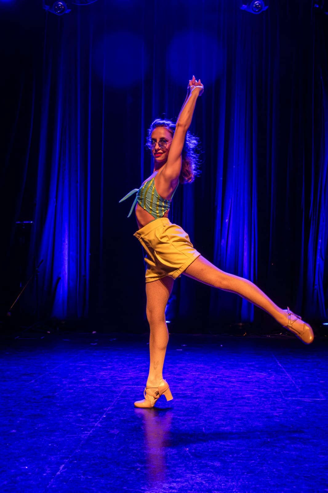
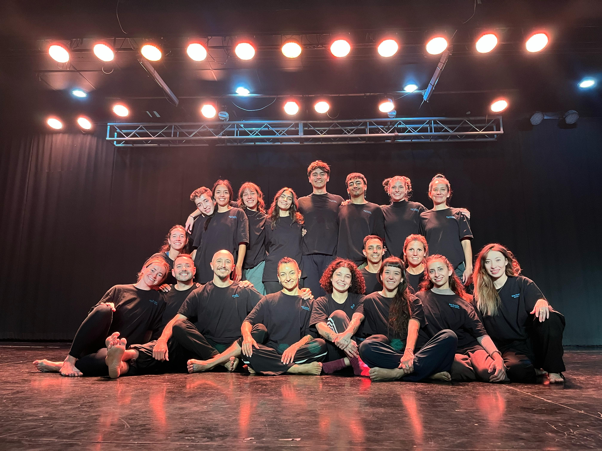

 Comencé mi formación en danza en una pequeña academia local, partiendo de una base en danza clásica, apendí la terminología y terminé enamorándome de la misma. Amplié mis conocimientos estudiando un profesorado en Danza Clásica en el Instituto Patagónico de las Artes, en Gral. Roca, Río Negro; donde también tuve la oportunidad de ser parte del Ballet Río Negro como ensamble. Dicté seminarios de verano cmo una manera de adentrarme en la docencia; volví al viejo estudio que en un primer momento me abrió las puerta, esta vez como profesora. Con la llegada de la pandemia, y gracias a la oportunidad de las clases virtuales, incursioné en un estilo completamente nuevo, la danza jazz. Allí volví sentir aquella primera pasión por la danza, tal como la recordaba. Comencé con clases locales, para luego pasar por seminarios de grandes maestros del jazz; eso mismo me brindó la oportunidad de realizar el curso de verano que se dicta en la Universidad de Point Park, en Pittsburgh, Pensilvania, gracias a una beca que se me otorgó. Allí conocí gente maravillosa, increíbles maestros y bailarines de todas las disciplinas, el honor de ser elegida como parte del elenco de varias piezas en la muestra del final de curso, y simplemente la satisfacción de estar en otro lugar haciendo lo que tanto amo.
En agosto del 2024 audicioné para formar parte de la Compañía Medusa de Rob Priore, para el montaje que tendria sede en Neuquén en marzo del 2025. En aquella oportunidad no fui seleccionada por el coreografo, sin embargo, justamente en marzo de 2025 se hizo una segunda audición para el mismo proyecto, en la cual participé y esta vez si fui seleccionada.
El monatje se realizó en una semana, desde el momento de la audición hasta la función del espectáculo. Con ensayos diarios de mínimo 3hs, todos los días y sin falta, se creó "Bois Perdidos - Historias Silenciosas", con un elenco completamente local, de la Patagonia Argentina.
El día 23 de marzo, con localidades agotadas, finalizó la experiencia Compañía Medusa en Neuquén.
Muchas veces creí que por, quizá, haber empezado en la danza a una no tan corta edad, nunca podría ser capaz de cumplir alguno de mis sueños, y que estaría destinada a solame4nnte ser docente en alguna pequeña academia de pueblo.
Sin embargo hoy, a mis 26 años, puedo decir que estoy orgullosa de todo lo que he logrado, y que quién sabe todo lo que pueda venir más adelante.
Solo tengo palabras de agradecimiento para todos los maestros que me han formado; desde mii primera maestra, hasta cada uno de todos los que conocí en Point Park.
Y si hay alguien leyendo esto, nunca es tarde para cumplir sueños. Por mas lejanos que parezcan.